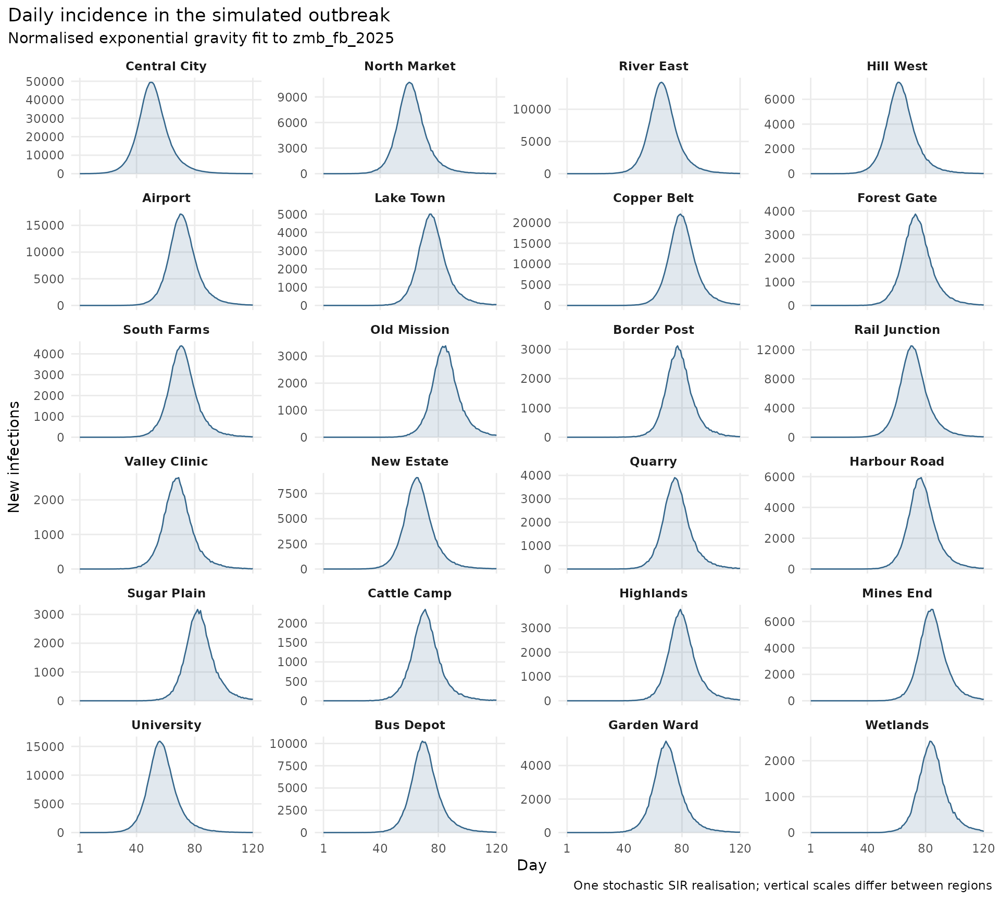
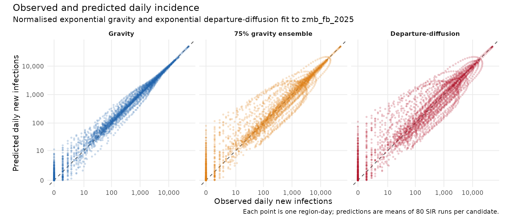
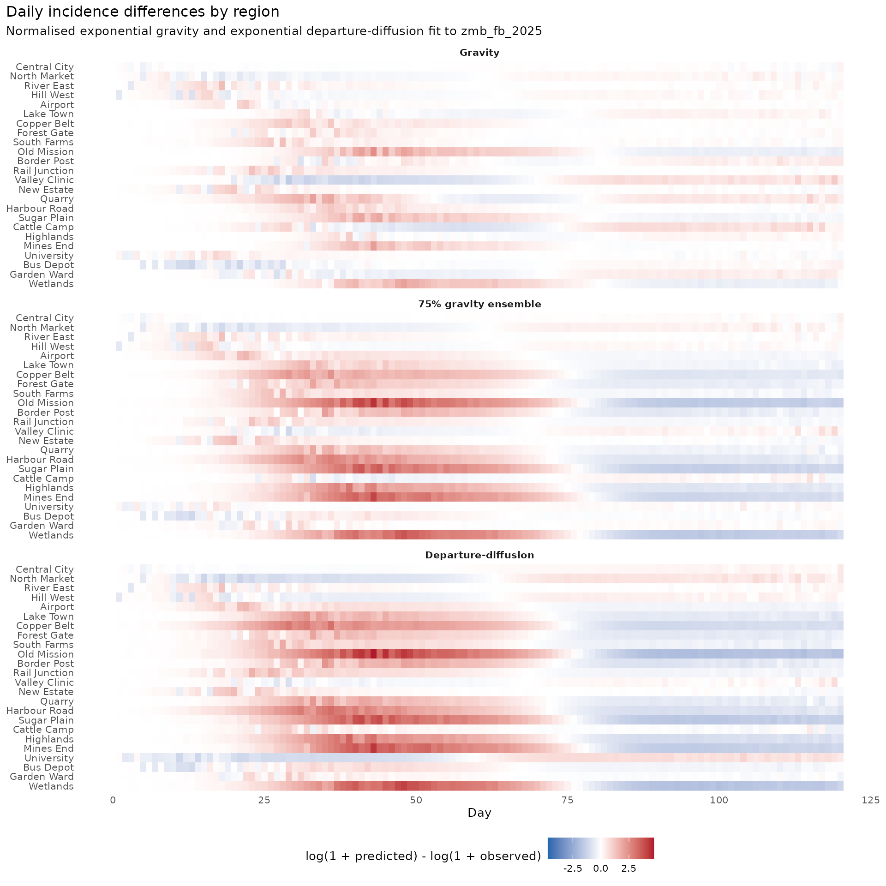

Identifying a mobility model for an outbreak
outbreak-model-selection.RmdWhen choosing a mobility model for an outbreak analysis, we may be interested in how well it explains the spread of infection between regions. A model can fit its source mobility data closely yet give a different pattern of spread from another plausible model. In this example we will compare those patterns using daily incidence, so that both the timing of an outbreak and the number of infections contribute to the comparison.
We will first construct a fictional set of regions and simulate an outbreak using one of the bundled gravity models. We can then treat the daily new infections from that simulation as our observations and ask how well different mobility models reproduce them. Knowing which model generated the data makes this a useful example for exploring the workflow, although a single simulated outbreak cannot tell us which model would be appropriate for a real setting.
A fictional place
Let’s start with 24 hypothetical regions. Each has a name, population size and location, giving us the inputs needed to predict a mobility matrix. We use invented coordinates to construct pairwise distances in kilometres, rather than trying to reproduce the geography of a particular country. The larger central population and the smaller surrounding regions give the models a range of population sizes and distances over which to predict movement.
Show code for this step
regions <- data.frame(
region = c(
"Central City", "North Market", "River East", "Hill West",
"Airport", "Lake Town", "Copper Belt", "Forest Gate",
"South Farms", "Old Mission", "Border Post", "Rail Junction",
"Valley Clinic", "New Estate", "Quarry", "Harbour Road",
"Sugar Plain", "Cattle Camp", "Highlands", "Mines End",
"University", "Bus Depot", "Garden Ward", "Wetlands"
),
x = c(
0, 0.8, 1.6, -1.1, 2.5, -2.0, 3.1, -2.6,
0.4, -1.8, 3.8, 1.9, -0.4, 0.9, 2.8, -3.1,
-0.9, 1.4, -2.4, 3.5, 0.2, 1.1, -1.3, -2.8
),
y = c(
0, 1.2, -0.4, 0.9, 0.7, 2.2, 2.1, -0.1,
-1.9, -2.4, -1.3, 1.8, 2.9, -0.9, -2.5, 1.1,
-3.2, -2.8, 3.2, 3.0, 0.4, -1.6, 1.9, -1.7
),
population = c(
1250000, 260000, 340000, 180000, 410000, 120000,
520000, 95000, 105000, 80000, 70000, 300000,
65000, 220000, 90000, 140000, 75000, 55000,
85000, 160000, 380000, 240000, 130000, 60000
)
)
D <- as.matrix(dist(regions[, c("x", "y")])) * 70
dimnames(D) <- list(regions$region, regions$region)
N <- setNames(regions$population, regions$region)
newdata <- list(D = D, N = N)
regions[1:8, ]#> region x y population
#> 1 Central City 0.0 0.0 1250000
#> 2 North Market 0.8 1.2 260000
#> 3 River East 1.6 -0.4 340000
#> 4 Hill West -1.1 0.9 180000
#> 5 Airport 2.5 0.7 410000
#> 6 Lake Town -2.0 2.2 120000
#> 7 Copper Belt 3.1 2.1 520000
#> 8 Forest Gate -2.6 -0.1 95000The region names identify the rows and columns of D and
the entries in N. Keeping those names consistent lets us
use the same inputs with each candidate model and match the resulting
predictions to the outbreak observations. For an applied analysis, we
would replace these invented inputs with distances and population
estimates for the study regions.
Mobility candidates from nomad
We will compare normalised exponential gravity
(zmb_fb_2025_mod_grav_exp_norm) and exponential
departure-diffusion (zmb_fb_2025_mod_dd_exp), both fit to
the Zambia Facebook dataset zmb_fb_2025. These are the two
models explored in Selecting a mobility
model. Their parameters were estimated from mobility observations.
We will use the mean parameter estimates to predict movement between our
fictional regions and keep them fixed throughout the outbreak
comparison.
The gravity model will generate the example outbreak, while departure-diffusion provides an alternative assumption about movement. We will also examine three ensembles with gravity weights of 0.25, 0.5 and 0.75. The helper below produces the corresponding matrix for any of these weights, with zero giving only departure-diffusion and one giving only gravity.
Show code for this step
gravity_model <- model_db$zmb_fb_2025_mod_grav_exp_norm
diffusion_model <- model_db$zmb_fb_2025_mod_dd_exp
gravity_flows <- predict(gravity_model, newdata = newdata, unit = "km")
diffusion_flows <- predict(diffusion_model, newdata = newdata, unit = "km")
candidate_prediction <- function(weight_gravity) {
if (weight_gravity == 0) {
return(predict(diffusion_model, newdata = newdata, unit = "km"))
}
if (weight_gravity == 1) {
return(predict(gravity_model, newdata = newdata, unit = "km"))
}
ensemble <- nomad_ensemble(
list(diffusion = diffusion_model, gravity = gravity_model),
weights = c(diffusion = 1 - weight_gravity, gravity = weight_gravity)
)
predict(ensemble, newdata = newdata, unit = "km")
}A spatially coupled SIR model
We use a stochastic susceptible-infectious-recovered (SIR) model with daily updates. Infection spreads through contacts within each region and with other regions, while infectious people recover and remain immune. The mobility matrix determines how between-region contacts are distributed.
To obtain those contact shares, we remove within-region trips from
the diagonal and divide each row by its remaining total. An entry in
P then gives the share of an origin’s outward movement
going to a particular destination. We use these shares to weight
infectious prevalence in the destinations. This captures the pattern of
movement, without treating the source trip counts as daily journeys or
moving people between their home populations.
Show how to turn predicted flows into contact shares
The force of infection combines local prevalence with this weighted prevalence in other regions,
Each day we draw new infections and recoveries from binomial distributions, using probabilities and respectively. Both use the compartment sizes at the start of the day and preserve each region’s population.
For all candidates, we use a transmission rate
beta = 0.35 per day, a recovery rate
gamma = 1 / 7 per day and a between-region mixing fraction
epsilon = 0.04. With daily updates, this gives an average
infectious duration of about 7.5 days and most exposure occurs locally.
Starting with 60 infections in Central City, we follow the outbreak for
120 days. Keeping these assumptions the same lets us compare the effect
of changing only the mobility model.
Show the daily stochastic SIR simulation
simulate_sir <- function(P,
N,
days = 120,
beta = 0.35,
gamma = 1 / 7,
epsilon = 0.04,
seed_region = "Central City",
seed_infections = 60,
keep_history = FALSE) {
S <- round(N)
I <- setNames(rep(0, length(N)), names(N))
R <- I
I[seed_region] <- seed_infections
S[seed_region] <- S[seed_region] - seed_infections
incidence <- matrix(0, nrow = days, ncol = length(N),
dimnames = list(seq_len(days), names(N)))
if (keep_history) history <- vector("list", days)
p_recover <- 1 - exp(-gamma)
for (day in seq_len(days)) {
prevalence <- I / N
imported <- as.numeric(P %*% prevalence)
lambda <- beta * ((1 - epsilon) * prevalence + epsilon * imported)
new_infections <- stats::rbinom(length(N), S, 1 - exp(-lambda))
recoveries <- stats::rbinom(length(N), I, p_recover)
S <- S - new_infections
I <- I + new_infections - recoveries
R <- R + recoveries
incidence[day, ] <- new_infections
if (keep_history) {
history[[day]] <- data.frame(
day = day, region = names(N), new_infections = new_infections,
susceptible = S, infectious = I, recovered = R
)
}
}
if (keep_history) return(do.call(rbind, history))
incidence
}
mean_sir <- function(P, N, days = 120, nsim = 80, seed = 1, ...) {
set.seed(seed)
total <- matrix(0, nrow = days, ncol = length(N),
dimnames = list(seq_len(days), names(N)))
for (i in seq_len(nsim)) {
total <- total + simulate_sir(P, N, days = days, ...)
}
total / nsim
}The simulation returns daily new infections by region, or a fuller
compartment history when keep_history = TRUE. We use
mean_sir() to average incidence over 80 runs per candidate.
These runs capture random infection and recovery events with the
mobility and transmission parameters held fixed.
Simulated outbreak data
We can now generate the observations using the gravity model. Setting a random seed makes this particular outbreak reproducible when the vignette is run again. The observed incidence consists of new infections during each day; the 60 people already infectious at the start are an initial condition and are not counted as new infections on day one.
truth_coupling <- flow_to_coupling(gravity_flows)
set.seed(99)
observed_history <- simulate_sir(truth_coupling, N, keep_history = TRUE)
observed_incidence <- matrix(
observed_history$new_infections, ncol = length(N), byrow = TRUE,
dimnames = list(seq_len(120), names(N))
)The panels below show how the same outbreak develops across all 24 regions. Central City has infection from the start, whereas other regions must first receive exposure through their connections to infected places. Their arrival times and subsequent trajectories depend on those connections as well as on random infection and recovery events. The panels share a time axis but have separate vertical scales so that the smaller outbreaks remain visible. Use the axis values when comparing numbers of infections between regions.
Show how to plot the regional outbreak curves
observed_history$region <- factor(observed_history$region, levels = regions$region)
ggplot2::ggplot(observed_history, ggplot2::aes(day, new_infections)) +
ggplot2::geom_area(fill = "#33658a", alpha = 0.15) +
ggplot2::geom_line(colour = "#33658a", linewidth = 0.45) +
ggplot2::facet_wrap(~region, ncol = 4, scales = "free_y") +
ggplot2::scale_x_continuous(breaks = c(1, 40, 80, 120)) +
ggplot2::labs(
x = "Day", y = "New infections",
title = "Daily incidence in the simulated outbreak",
subtitle = "Normalised exponential gravity fit to zmb_fb_2025",
caption = "One stochastic SIR realisation; vertical scales differ between regions"
) +
ggplot2::theme_minimal(base_size = 11) +
ggplot2::theme(panel.grid.minor = ggplot2::element_blank(),
strip.text = ggplot2::element_text(face = "bold"),
plot.title.position = "plot")
Fit the mobility weight to daily incidence
We will compare five candidate weights, including the two individual models. For each weight, we predict the mobility matrix, convert it to contact shares, and run the same SIR model 80 times. We then compare the mean daily incidence with the observations across all 120 days and all 24 regions. This retains information about when cases occurred that would be lost by comparing only the final outbreak size.
Our objective is the root mean squared difference between
log(1 + observed) and log(1 + predicted) daily
incidence. The logarithm reduces the dominance of the largest counts,
allowing discrepancies in smaller outbreaks to contribute, and adding
one keeps days with no cases in the comparison. Every region-day pair
has equal weight on this transformed scale. We do not rescale
predictions to match the observed total, shift their timing, or adjust
any transmission parameters to improve a candidate’s score.
We choose the weight with the smallest error from the five values we tried. This gives a simple grid search for the best match to the observed incidence. The scores rank these candidates for this outbreak, but do not give probabilities that the models are correct or an uncertainty interval for the selected weight.
Show how to score each candidate against daily incidence
log_rmse <- function(observed, predicted) {
stopifnot(identical(dimnames(observed), dimnames(predicted)))
sqrt(mean((log1p(observed) - log1p(predicted))^2))
}
score_candidate <- function(weight_gravity, nsim = 80, seed = 1000) {
flows <- candidate_prediction(weight_gravity)
predicted <- mean_sir(
flow_to_coupling(flows), N, nsim = nsim,
seed = seed + round(100 * weight_gravity)
)
list(
prediction = predicted,
score = data.frame(
weight_gravity = weight_gravity,
weight_departure = 1 - weight_gravity,
log_RMSE = log_rmse(observed_incidence, predicted)
)
)
}
weights <- c(0, 0.25, 0.5, 0.75, 1)
candidate_results <- lapply(weights, score_candidate)
scores <- do.call(rbind, lapply(candidate_results, `[[`, "score"))
scores <- scores[order(scores$log_RMSE), ]
rownames(scores) <- NULL
knitr::kable(
scores, digits = 3,
col.names = c("Gravity weight", "Departure-diffusion weight", "Daily log RMSE"),
caption = paste("Normalised exponential gravity and exponential departure-diffusion",
"fit to zmb_fb_2025; scored against the synthetic daily incidence")
)| Gravity weight | Departure-diffusion weight | Daily log RMSE |
|---|---|---|
| 1.00 | 0.00 | 0.432 |
| 0.75 | 0.25 | 0.892 |
| 0.50 | 0.50 | 0.973 |
| 0.25 | 0.75 | 1.005 |
| 0.00 | 1.00 | 1.058 |
The lowest score in this run occurs at a gravity weight of 1. Although gravity generated the observations, the observed outbreak is only one stochastic realisation, so its trajectory will differ from the mean over repeated simulations. A nearby ensemble can sometimes score better for that reason. The candidate means also vary between batches of simulations because each is estimated from a finite number of runs. If scores are close, we would want to repeat the calculation with more simulations and different seeds before treating their ordering as meaningful.
Compare observed and predicted incidence
The scatter plot below compares observed daily incidence with the mean predicted incidence for gravity, departure-diffusion and the best intermediate ensemble. That ensemble is the mixture with the lowest score among the three weights between zero and one. Each point is one region on one day, with points above the diagonal indicating overprediction and points below it indicating underprediction. All three panels use the same log(1 + incidence) scales so that small counts and days with no infections are visible alongside the largest counts.
Show how to assemble the observed and predicted daily incidence
prediction_by_weight <- setNames(
lapply(candidate_results, `[[`, "prediction"), weights
)
best_ensemble_weight <- scores$weight_gravity[
scores$weight_gravity > 0 & scores$weight_gravity < 1
][1]
comparison_weights <- c(1, best_ensemble_weight, 0)
comparison_labels <- c(
"Gravity", paste0(100 * best_ensemble_weight, "% gravity ensemble"),
"Departure-diffusion"
)
comparison <- do.call(rbind, lapply(seq_along(comparison_weights), function(i) {
predicted <- prediction_by_weight[[as.character(comparison_weights[i])]]
out <- observed_history[, c("day", "region", "new_infections")]
out$predicted <- as.vector(t(predicted))
out$model <- comparison_labels[i]
out$log_difference <- log1p(out$predicted) - log1p(out$new_infections)
out
}))
comparison$model <- factor(comparison$model, levels = comparison_labels)Show how to compare observed and predicted daily incidence
limit <- max(comparison$new_infections, comparison$predicted)
axis_labels <- function(x) format(x, big.mark = ",", scientific = FALSE, trim = TRUE)
ggplot2::ggplot(comparison, ggplot2::aes(new_infections, predicted, colour = model)) +
ggplot2::geom_abline(slope = 1, intercept = 0, linetype = "dashed", colour = "grey35") +
ggplot2::geom_point(size = 0.7, alpha = 0.18) +
ggplot2::facet_wrap(~model, nrow = 1) +
ggplot2::scale_colour_manual(values = c("#2166ac", "#e08214", "#b2182b")) +
ggplot2::scale_x_continuous(
trans = "log1p", limits = c(0, limit), breaks = c(0, 10, 100, 1000, 10000),
labels = axis_labels
) +
ggplot2::scale_y_continuous(
trans = "log1p", limits = c(0, limit), breaks = c(0, 10, 100, 1000, 10000),
labels = axis_labels
) +
ggplot2::coord_fixed() +
ggplot2::labs(
x = "Observed daily new infections", y = "Predicted daily new infections",
title = "Observed and predicted daily incidence",
subtitle = "Normalised exponential gravity and exponential departure-diffusion fit to zmb_fb_2025",
caption = "Each point is one region-day; predictions are means of 80 SIR runs per candidate."
) +
ggplot2::theme_minimal(base_size = 11) +
ggplot2::theme(legend.position = "none", panel.grid.minor = ggplot2::element_blank(),
strip.text = ggplot2::element_text(face = "bold"),
plot.title.position = "plot")
The scatter plot makes overall agreement easy to see, but does not show where or when the differences occur. The heatmap below retains that information, showing the signed log difference for each region and day. Red means predicted incidence is higher than observed, while blue means it is lower. A run of red followed by blue can suggest that a predicted outbreak is too early. Some variation remains even for the generating model, because we are comparing simulation averages with one stochastic outbreak.
Show how to plot daily incidence differences
comparison$region <- factor(comparison$region, levels = rev(regions$region))
limit <- max(abs(comparison$log_difference))
ggplot2::ggplot(comparison, ggplot2::aes(day, region, fill = log_difference)) +
ggplot2::geom_tile() +
ggplot2::facet_wrap(~model, ncol = 1) +
ggplot2::scale_fill_gradient2(
low = "#2166ac", mid = "white", high = "#b2182b",
midpoint = 0, limits = c(-limit, limit)
) +
ggplot2::scale_y_discrete(expand = c(0, 0)) +
ggplot2::labs(
x = "Day", y = NULL, fill = "log(1 + predicted) - log(1 + observed)",
title = "Daily incidence differences by region",
subtitle = "Normalised exponential gravity and exponential departure-diffusion fit to zmb_fb_2025"
) +
ggplot2::theme_minimal(base_size = 10) +
ggplot2::theme(legend.position = "bottom", panel.grid = ggplot2::element_blank(),
strip.text = ggplot2::element_text(face = "bold"),
plot.title.position = "plot")
Using this approach in an analysis
This example compares mobility assumptions while holding everything else fixed. It helps us see whether a change in the predicted pattern of travel changes the daily incidence in places we care about. The selected weight is specific to this simulated outbreak, the contact model, and the five values we tried. Since the same outbreak is used for both choosing the weight and assessing its fit, the results show how well the candidates explain these observations. They do not yet show how well the selected model would predict a different outbreak or a later period that was not used to choose the weight.
In a real analysis, transmission rates, initial infections and the relationship between infections and recorded cases would also need justification. Changes in those assumptions could compensate for differences between mobility models, making the mobility weight difficult to identify from case data alone. The simulation averages here include infection and recovery randomness, but do not propagate uncertainty in mobility parameters, population sizes or transmission parameters. Before using a fitted weight to make forecasts, we would need to examine those sources of uncertainty and assess predictions against data that were not used to choose the weight.